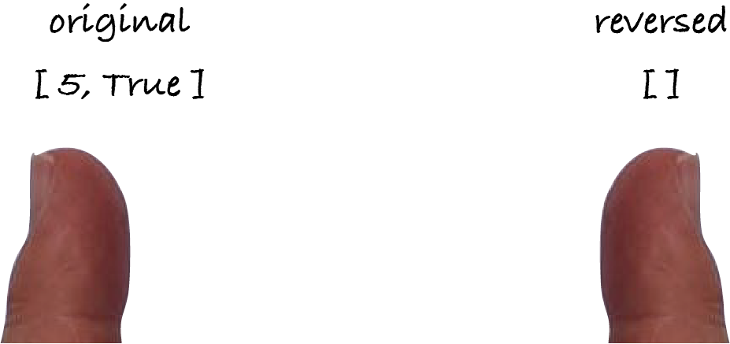
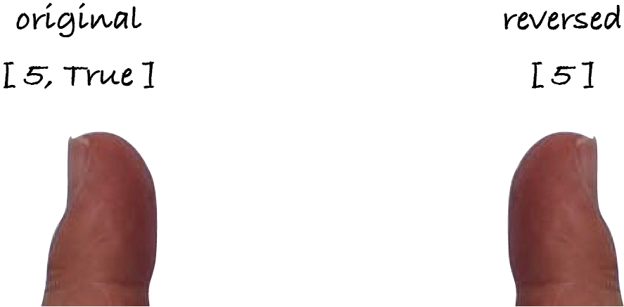
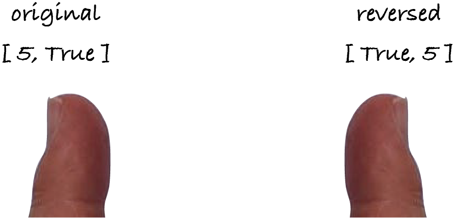

4.7. Reversal
This section presents a single problem, reversing a sequence, to further illustrate sequences, iteration and the problem-solving process.
4.7.1. Problem definition
This is the definition from the previous section.
With the Python operations we have seen so far, it’s impossible to write a Python function that reverses any sequence, be it a string, tuple or list. We have to restrict the problem to a particular data type. I’ll solve it for lists and I’ll leave strings to you as an exercise. (Tuples are handled similarly.)
Since this function is for a Python data type, I use Python’s notation (square brackets for lists) in the postcondition.
4.7.2. Problem instances
I have to think of some problem instances to test the function. The smallest possible inputs are always edge cases and must be included in the test table. For this example, it’s the empty list. If the preconditions allow the empty sequence, then a sequence with a single item is an edge case too: it’s the smallest non-empty sequence.
For problems about sequences, it’s often convenient to test sequences of odd and even length, because the middle element of a list of odd length may be treated differently. In this problem, the middle member is the only one that has the same position in the reverse list.
Test cases for sequences should also include, if the preconditions allow, duplicate and unique items, and values of different types.
When thinking about problem instances, put your hacker hat on: you’re trying to break the algorithm to reveal it’s incorrect. Throw curveballs: think of valid inputs that most people wouldn’t dream of when reading the problem description. You don’t need large inputs to properly test an algorithm. An algorithm is often incorrect because it failed to consider a particular case, e.g. all items in a sequence being the same. Such cases can be covered with small inputs. When it comes to problem instances for testing, think small, think wildly. (But not too wildly: all test cases must satisfy the preconditions.)
So far, we wrote test tables in Markdown and translated them to one code cell per test case. We can now write them directly in Python, as a list (or tuple) of test cases, each represented by a list or tuple. I prefer to write test tables as a list of tuples, so that I can later append a test case if I forgot one, but you can use any combination you prefer.
The table’s name is the operation’s name followed by _tests. Each row is the test case description (a string), followed by the input values and ending with the expected output value. The column headings are a comment instead of a row; you’ll see why when we get to the actual testing.
Here’s a possible table for the reversal problem. It includes odd- and even-length lists, values of different types, and lists with duplicate items.
[1]:
reverse_list_tests = [
# case, values, reverse
('empty list', [], [] ),
('length 1', [4], [4] ),
('length 2', [5, True], [True, 5] ),
('length 5', [5, 6, 7, 8, 9], [9, 8, 7, 6, 5] ),
('same items', [0, 0, 0], [0, 0, 0] )
]
The algoesup module, part of the M269 software, has a function check_tests that checks if the test table is well formed. It takes two arguments: the table and a list with the types of the inputs and output. In this example, there’s only one input (a list to be reversed) and the output is also a list (the reversed one), so we write:
[2]:
import algoesup
algoesup.check_tests(reverse_list_tests, [list, list])
OK: the test table passed the automatic checks.
When we need a function f from a module m, we can write from m import f to directly refer to f, instead of writing m.f.
[3]:
from algoesup import check_tests
check_tests(reverse_list_tests, [list, list])
OK: the test table passed the automatic checks.
Function check_tests only spots structural mistakes, like the table not being a list or tuple of tests, or a test not starting with a string describing the test case. Even if the table is OK, the tests may be wrong. For example, the checks won’t spot if the expected output is wrong.
4.7.3. Algorithm
Sometimes the best way to come up with an algorithm is to think how we’d do it manually. And I literally mean with our hands.
The reverse operation takes one list and produces another one. Lists have to be processed item by item. I use my left index finger to point at the item being processed in the input list and my right index finger to point to the position where that item should be put in the output list.
Initially, my left finger points at the first item of values and my right finger points to an empty reverse list. Let’s use the length 2 test case.
The first two steps are obvious: insert the item pointed by the left finger into the empty list and move the left finger to the next item.
The second item of values should be inserted at the start of reverse, hence I can keep the right finger where it is.
If the input list were longer, I would continue in the same way. Each item of values has to be inserted at index 0 of reverse to push the previous items to the right. I’m ready to write the algorithm:
let reverse be the empty list
for each item in values:
insert item at index 0 of reverse
Before implementing this algorithm, let’s check it works for the edge cases. Does it work for lists of length 0 and 1?
Yes, it does. The loop is executed as often as the length of the input list, so the output is the same as the input for lists of length 0 and 1.
4.7.4. Complexity
I can ignore step 1 because it takes constant time. Step 2 is executed │values│ times. The complexity of inserting an item at index i in a list of length l is Θ(l - i). In step 3, i = 0, so that step has complexity Θ(│reverse│): it shifts all items in reverse up to make space for a new item at index 0. The complexity of the loop is hence │values│ × Θ(│reverse│) = Θ(│values│ × │reverse│). Unfortunately, I can’t write it like that because reverse isn’t an input. Fortunately, │reverse│ = │values│ because reversing a list doesn’t change its length. The algorithm has quadratic complexity: Θ(│values│²).
4.7.5. Code
The translation of the function definition and the algorithm to Python is:
[4]:
def reverse_list(values: list) -> list:
"""Return the same items as values, in inverse order.
Postconditions: the output is
[values[-1], values [-2], ..., values[1], values[0]]
"""
reverse = []
for item in values:
reverse.insert(0, item)
return reverse
4.7.6. Tests
Having put the test cases in a table, we can automatically run all tests, instead of manually writing one code cell for each. This is done by function algoesup.test, which takes the function to be tested and the table of tests.
[5]:
from algoesup import test
test(reverse_list, reverse_list_tests)
Testing reverse_list...
Tests finished: 5 passed (100%), 0 failed.
The test function goes through each row of the test table, extracts the case description, the input and the expected output, calls the reverse_list function on that input and compares the result to the expected output. If the actual and expected outputs differ, the test fails and is reported.
The test function checks the test table before running the tests, but does fewer checks than check_tests, namely it doesn’t check the types of the tests’ inputs and output. Despite this, I will use mostly function test to check the table, and only call check_tests when test can’t be used, namely when I’ve yet to write the function to be tested.
Info: The algoesup module was written by former M269 student Michael Snowden and myself, to support the writing of algorithmic essays in Jupyter notebooks. If you have the time, I recommend you write an essay on a problem of your choice, to practice M269 concepts and your communication skills. See our website for example essays, essay templates, and guidance to get you started.
4.7.7. Performance
An algorithm with quadratic complexity takes much longer than an algorithm with linear complexity. Let’s assume an algorithm with complexity Θ(e) does exactly e operations, each taking one microsecond. Here are the run-times for various input sizes n.
n |
Θ(1) |
Θ(n) |
Θ(n²) |
|---|---|---|---|
10 |
1 µs |
10 µs |
100 µs |
1,000 |
1 µs |
1 ms |
1 s |
2,000 |
1 µs |
2 ms |
4 s |
2,000,000 |
1 µs |
2 s |
4,000,000 s = 46 days |
When the input size doubles, a linear algorithm takes double the time, but a quadratic algorithm takes 2² = 4 times as long. If the input is a thousand times as long then a linear algorithm takes a thousand times as long, but a quadratic algorithm takes 1000² = 1,000,000 times as long!
Note: When the input size doubles, the run-time of algorithms with constant, linear and quadratic complexity respectively stays the same, doubles or quadruples.
To measure the run-times of quadratic algorithms we can’t use very large inputs, unless we’re prepared to wait quite a bit.
[6]:
size = 10
for measurement in range(10):
numbers = list(range(size)) # list [0, 1, 2, ..., size-1]
print("Reversing", size, "numbers:")
%timeit -r 5 reverse_list(numbers)
size = size * 2
Reversing 10 numbers:
264 ns ± 1.09 ns per loop (mean ± std. dev. of 5 runs, 1,000,000 loops each)
Reversing 20 numbers:
499 ns ± 3.2 ns per loop (mean ± std. dev. of 5 runs, 1,000,000 loops each)
Reversing 40 numbers:
1.13 μs ± 6.59 ns per loop (mean ± std. dev. of 5 runs, 1,000,000 loops each)
Reversing 80 numbers:
3.33 μs ± 24.7 ns per loop (mean ± std. dev. of 5 runs, 100,000 loops each)
Reversing 160 numbers:
9.91 μs ± 28.4 ns per loop (mean ± std. dev. of 5 runs, 100,000 loops each)
Reversing 320 numbers:
31.9 μs ± 192 ns per loop (mean ± std. dev. of 5 runs, 10,000 loops each)
Reversing 640 numbers:
111 μs ± 309 ns per loop (mean ± std. dev. of 5 runs, 10,000 loops each)
Reversing 1280 numbers:
409 μs ± 2.12 μs per loop (mean ± std. dev. of 5 runs, 1,000 loops each)
Reversing 2560 numbers:
1.58 ms ± 19.7 μs per loop (mean ± std. dev. of 5 runs, 1,000 loops each)
Reversing 5120 numbers:
6.18 ms ± 30.2 μs per loop (mean ± std. dev. of 5 runs, 100 loops each)
On my machine the run-times start quadrupling for the larger values: the run-times for very small inputs are not a reliable indication of complexity. I should have started with a size of, say, 500, and do fewer than ten measurements.
Exercise 4.7.1
Write a more efficient algorithm to produce a reverse list. (The next exercise asks you to justify why it’s more efficient.)
Exercise 4.7.2
Analyse the complexity of your algorithm, showing that it’s more efficient than the original algorithm.
Exercise 4.7.3
Translate your algorithm to Python and test it.
[7]:
def reverse_list_2(values: list) -> list:
"""Return the same items as values, in inverse order.
This is a more efficient version of reverse_list.
Postconditions: the output is
[values[-1], values [-2], ..., values[1], values[0]]
"""
# replace with your function body
test(reverse_list_2, reverse_list_tests)
Exercise 4.7.4
Write a reversal algorithm for when values and reverse are strings.
Exercise 4.7.5
What is the complexity of your reversal algorithm for strings?
Exercise 4.7.6
Write an algorithm in English that reverses a list in-place, i.e. without creating a new list. There’s a single input/output variable values. (See the solution to Exercise 4.6.1.) Think with your hands.
Exercise 4.7.7
Implement your algorithm in the next code cell and run it.
Note that the header indicates that the function returns None. That’s Python’s way of saying that it returns nothing, because the reversal is done in-place. Like True and False, None is both a value (that can be compared with the equality and inequality operations) and a keyword (so that it can’t be used as a variable name by mistake). In Python, all functions that haven’t a return statement return None.
[8]:
def reverse_in_place(values: list) -> None:
"""Write the docstring."""
# replace this with your code
# modify `values` variable and do NOT use a return statement
# `algoesup.test` can only test functions that return values,
# so I've written the testing code for you
for test in reverse_list_tests:
name = test[0]
values = test[1]
reverse = test[2]
reverse_in_place(values)
if values != reverse:
print(name, "FAILED:", values, "instead of", reverse)
print("Tests finished.")